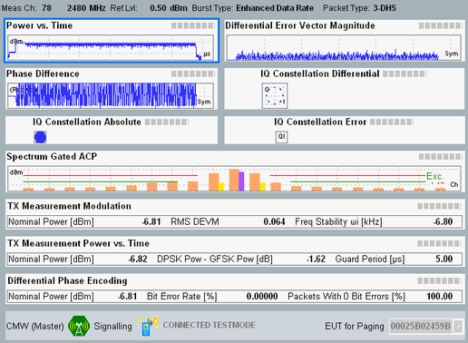

The Tx measurement results are displayed in a "Multi Evaluation" tab.
The most important settings of the Bluetooth multi-evaluation measurement are displayed at the top of the measurement dialog. The settings display frequency, reference level, burst type (for BR/EDR), packet type, setup (for LE: burst type, physical layer and coding). If enabled, the automatic detection of received packets is also indicated.
The Bluetooth multi-evaluation Tx measurement dialog shows all results in several alternative views; see detailed description in "Multi-Evaluation Measurement Results".
The multi-evaluation measurement provides an overview dialog and a detailed view for each diagram in the overview. Each dialog shows the most important RF and analyzer settings. The dialogs also visualize the limit check results.
See also: "Limit Check"
Measurement results depend on the packet type. The following example shows the analysis of EDR (3-DH5) packets in the "Overview" dialog.

All commands for result query start with FETCh, READ or CALCulate and continue with :BLUetooth:MEAS<i>:MEValuation:. A TRACE in the remainder indicates that a measured curve is queried. Bar graphs and tables are queried without TRACE.
- FETCh:BLUetooth:MEAS<i>:MEValuation:TRACe:DEVMagnitude:AVERage?
- READ:BLUetooth:MEAS<i>:MEValuation:PVTime:EDRate:CURRent?
- CALCulate:BLUetooth:MEAS<i>:MEValuation:SACP:LENergy:LRANge?
For links to the relevant command reference sections, refer to the result view descriptions in "Multi-Evaluation Measurement Results".